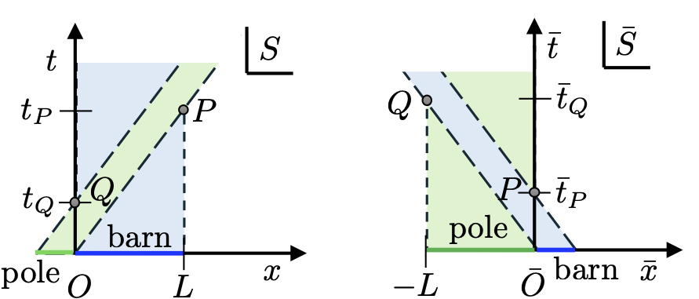
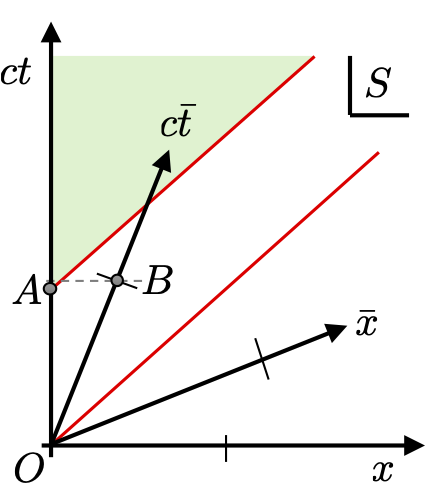
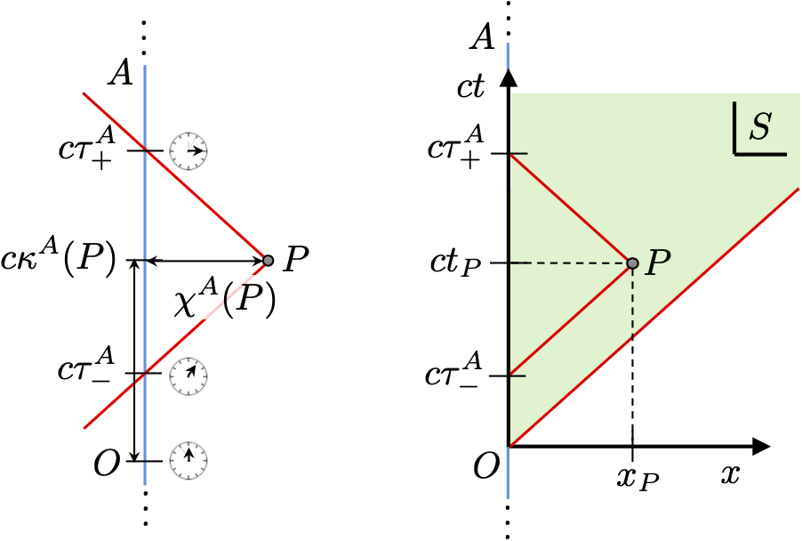
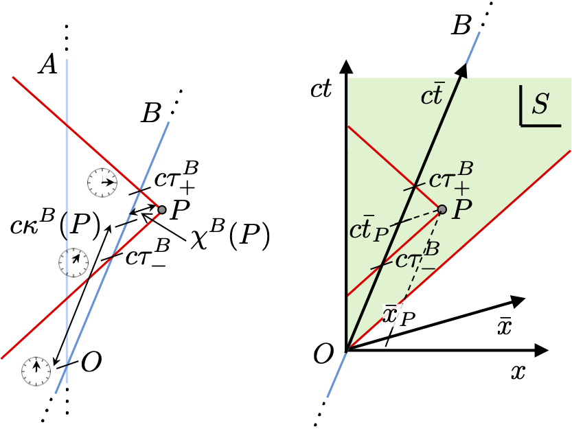

Example Class 1
In this example class we will work through some simple problems in special relativity.
Let’s start with a Multiple choice quiz.
1. The relativistic pole vaulter
In frame \(S\) we have a barn at rest, whose length is \(L\) in the \(x\)-direction, and with open doors at each end. A pole vaulter runs along the \(x\)-direction at a relativistic speed \(v\). In her rest frame \(\bar{S}\), she carries a pole of length \(L\) in the \(\bar{x}\)-direction. By careful consideration of the order of space-time events as perceived in each frame, describe whether the pole is ever entirely inside the barn or not. Sketch the 1 + 1D Minkowski space of events in the \(S\) frame and the \(\bar{S}\) frame.
1. The relativistic pole vaulter
Consider the two inertial frames of this problem:
- \(S\): barn frame (barn of length \(L\) stationary),
- \(\bar S\): pole frame (pole of length \(L\) stationary).
The coordinates \((t,x)\) in \(S\) and \((\bar t,\bar x)\) in \(\bar S\) are related by the Lorentz boost (along \(x\)): \[ \begin{pmatrix} \bar t \\ \bar x \end{pmatrix} = \begin{pmatrix} \gamma & -\gamma v/c^2 \\ -\gamma v & \gamma \end{pmatrix} \begin{pmatrix} t \\ x \end{pmatrix}, \qquad {\rm with} \qquad \gamma = \frac{1}{\sqrt{1-v^2/c^2}}. \] Let the spacetime origin \(O\) in both frames correspond to the event where the front of the pole enters the barn: \[ O:\quad \overbrace{(t,x)}^S = (0,0), \qquad \overbrace{(\bar t,\bar x)}^{\bar S} = (0,0). \] Let \(P\) be the event where the front of the pole leaves the barn. In frame \(S\), the front of the pole has travelled distance \(L\) (i.e. \(x=L\)) at speed \(v\), so the time taken is \(L/v\), hence \[ P: \quad \overbrace{\left(\frac{L}{v},\, L \right)}^S, \qquad \overbrace{(\bar t_P,\bar x_P)}^{\bar S}. \] Using the Lorentz transformation we find \[\begin{align} \bar t_P &= \gamma\left(\frac{L}{v} - \frac{v}{c^2}L\right) = \gamma \frac{L}{v}\left(1-\frac{v^2}{c^2}\right) = \frac{L}{\gamma v}, \\ \bar x_P &= \gamma\left(L - v\frac{L}{v}\right) = 0. \end{align}\] Thus the coordinates of \(P\) are \[ P: \quad \overbrace{\left(\frac{L}{v},\, L \right)}^S, \qquad \overbrace{\left(\frac{L}{\gamma v},\, 0\right)}^{\bar S}. \] Let event \(Q\) be the back of pole entering the barn. In frame \(\bar S\), the barn door appears to move with speed \(-v\) and travels the length \(L\) of the pole, so the time taken is \(L/v\), so \[ Q: \quad \overbrace{(t_Q,x_Q)}^{S}, \qquad \overbrace{\left(\frac{L}{v},\, -L \right)}^{\bar S}. \] Using the inverse Lorentz transformation \[\begin{align} t_Q &= \gamma\left(\frac{L}{v} - \frac{v}{c^2}(-L)\right) = \gamma \frac{L}{v}\left(1-\frac{v^2}{c^2}\right) = \frac{L}{\gamma v}, \\ x_Q &= \gamma\left(-L + v\frac{L}{v}\right) = 0. \end{align}\] Thus \[ Q: \quad \overbrace{\left(\frac{L}{\gamma v},0\right)}^{S}, \qquad \overbrace{\left(\frac{L}{v},\, -L \right)}^{\bar S}. \] Since \(\gamma > 1\) we have \(\frac{L}{\gamma v} < \frac{L}{v}\). In frame \(S\), \(Q\) occurs before \(P\), so the contracted pole fits entirely inside the barn for \[ \frac{L}{\gamma v} \le t \le \frac{L}{v}. \] In frame \(\bar S\), \(Q\) occurs after \(P\), so the pole is never entirely inside the contracted barn. The following diagram summarises these findings:

Note that \(O\) and \(P\) lie on the worldline of the front of the pole, while \(O\) and \(Q\) lie on the worldline of the barn door. Events \(P\) and \(Q\), however, are spacelike separated, hence there is no issue with different inertial observers disagreeing on their time ordering. We explore this idea more in the next question.
2. Whose time is dilated?
According to frame \(S\) a unit of time in \(\bar{S}\) is dilated. This means the space-time point for \(ct = 1\) occurs before the space-time point for \(c\bar{t}=1\). However, in frame \(\bar{S}\) the opposite occurs. They see the \(ct = 1\) point being dilated and occuring after the point \(c\bar{t}=1\). Is this a contradiction?
2. Whose time is dilated?
In short no it is not a problem. The frames \(S\) and \(\bar{S}\) both see the other frame as being dilated and so disagree on the causal ordering of the event \(A\) at \(ct = 1\) and \(B\) at \(c\bar{t} = 1\). This is not an issue because the space-time interval between these points is: \[ \begin{align} \Delta S^2(ct=1,c\bar{t}=1) &= (1 - \gamma(\beta))^2 - (0 - \beta\gamma(\beta))^2, \\ &= 1 - 2\gamma(\beta) + \gamma(\beta)^2(1-\beta^2), \\ &= 2(1-\gamma(\beta)), \end{align} \] and since \(\gamma(\beta)\geq 1\) we can immediately conclude that the space-time interval \(\Delta S^2(ct=1,c\bar{t}=1) \leq 0\), and hence these points are space-like separated, as is apparent in Figure 1. Lorentz boosts only preserve the causal ordering of time-like separated events so there is no inconsistency here. Indeed, we can find another frame \(S'\) where the time of the two ticks are identical (so occur simultaneously), namely one travelling \(v/2\) relative to \(S\), which is also \(-v/2\) relative to \(\bar{S}\) which observes both ticks as being identically time dilated relative to its own tick.

3. Radar Time and Operational Coordinates
In relativity conceptually we can envisage an inertial frame as a grid of measuring rulers and synchronised clocks spread throughtout space. However, operationally a single observer can use a much simpler procedure to establish coordinates of a space-time event. Suppose we have an inertial observer \(A\) travelling along some worldline. They carry a clock from which they can measure their proper time \(\tau^A\). To measure the coordinates of some space-time event \(P\) they emit a light signal at time \(\tau^A_-\) which reflects off event \(P\) and returns to the observer at time \(\tau^A_+\). This is shown here:

From these measurements they define the radar time \(\kappa(P)\) and radar distance \(\chi(P)\) assigned to the event \(P\) as \[ \kappa^A(P) = \frac{1}{2}(\tau^A_+ + \tau^A_-), \qquad \chi^A(P) = \frac{c}{2}(\tau^A_+ - \tau^A_-). \] Notice that radar coordinates are geometrically defined from the observer’s worldline, not from a coordinate system attached to any given frame.
- Explain the operational meaning of radar time and radar distance. When are these quantities well-defined?
Now suppose we introduce a frame \(S\) aligned and at rest with \(A\) where the event \(P\) has coordinates \((ct_P,x_P)\), as shown in Figure 2.
- From Figure 2 it looks clear that the radar coordinates are identical to the observers rest frame coordinates. Confirm this using null worldlines by showing that \(\kappa^A(P)=t_P\) and \(\chi^A(P)=|x_P|\).
Now consider another inertial observer \(B\) travelling with a constant velocity \(v\) relative to \(A\) and whose worldline crosses through \(A\)’s’ origin and is described in frame \(S\) as \(x=vt\), as shown here:

Observer \(B\) records their proper time \(\tau^B_-\) when the light signal from \(A\) reaches them on its journey to \(P\), and the time \(\tau^B_+\) when the return signal passes them on its way back to \(A\), as shown in Figure 3.
- Deduce the coordinates in \(S\) of \(B\)’s’ emission and reception interception times \(\tau^B_\pm\) in terms of the coordinates \((ct_P,x_P)\) of \(P\) in \(S\). Use these to determine \(B\)’s radar coordinates \(\kappa^B(P)\) and \(\chi^B(P)\) they assign \(P\). Compare the expressions with the Lorentz transformations between \(A\)’s rest frame \(S\) and \(B\)’s rest frame \(\bar S\).
3. Radar Time and Operational Coordinates
Radar time assigns a time coordinate to a distant event using only the observer’s own clock and light signals. The radar distance is half the round-trip light travel time multiplied by \(c\). The definition is operationally meaningful because it relies only on proper time measurements and the invariant speed of light. It is well-defined for events that lie in the causal cone of the observer’s worldline, so that both emission and reception signals can be reached.
Light travels on null worldlines so a light ray between \((c\tau^A,0)\) and \((ct_P,x_P)\) we have \[ (x_P - 0)^2 = c(t_P-\tau^A)^2 \quad {\rm or} \quad |x_P| = c|t_P-\tau^A|. \] For the outgoing signal, \(t_P>\tau^A_-\) so \(t_P - \tau^A_- > 0\) and \(|x_P| = c(t_P - \tau^A_-)\) giving \(c\tau^A_-=ct_P-|x_P|\). For the incoming signal, \(\tau^A_+ >t_P\) so \(t_P - \tau^A_+ < 0\) and \(|x_P| = c(\tau^A_+ - t_P)\) giving \(c\tau^A_+=ct_P+|x_P|\). Substituting, \[ \kappa^A(P)=\frac{1}{2}(\tau^A_+ + \tau^A_-)=t_P, \qquad \chi^A(P)=\frac{c}{2}(\tau^A_+-\tau^A_-)=|x_P|. \] Note, the radar distance is not a signed coordinate value for the event since it was derived from a time difference and has no dependence on the direction light travelled. Of course, the observer does know which direction (\(\pm\) along the \(x\)-axis) the light was emitted and received so this information is not lost, it is just not explicitly embedded into the radar coordinates. Nonetheless we have established that the radar coordinates are equivalent to the space-time coordinates the observers inertial frame assigns to events.
Given points along the worldline of observer \(B\) have \(x = vt\) in \(S\) we only need to determine the time coordinate in \(S\) of the emission and reception intercepts of \(B\) which we denote as \(t_\pm\). A null ray between \((ct_\pm,vt_\pm)\) and \((ct_P,x_P)\) satisfies \[ c^2(t_P-t_\pm)^2 = (x_P-vt_\pm)^2, \] which yields \(c(t_P-t_\pm)=\pm(x_P-vt_\pm)\). Solving, \[ ct_\pm = \frac{ct_P\mp x_P}{1 \mp \beta}, \] where we have introduced \(\beta = v/c\). We can now work out \(B\)’s’ proper times \(\tau^B_\pm\) by computing the space-time intervals between the shared origin and these points as \[\begin{align} (c\tau^B_-)^2 &= (ct_-)^2 - (vt_-)^2, \\ &= \frac{(ct_P + x_P)^2}{(1 + \beta)^2} - \frac{(vt_P + \beta x_P)^2}{(1 + \beta)^2},\\ &= \frac{(1 - \beta)(ct_P + x_P)^2}{(1 + \beta)}, \\ c\bar{\tau}_- &= \sqrt{\frac{(1 - \beta)}{(1 + \beta)}}(ct_P + x_P). \end{align}\] and similarly \[\begin{align} (c\tau^B_+)^2 &= (ct_+)^2 - (vt_+)^2, \\ c\bar{\tau}_+ &= \sqrt{\frac{(1 + \beta)}{(1 - \beta)}}(ct_P - x_P). \end{align}\] Using this we get \[\begin{align} c\,\kappa^B(P) &= \frac{c(\tau^B_+ + \tau^B_-)}{2},\\ &= \sqrt{\frac{(1 + \beta)}{(1 - \beta)}}\frac{(ct_P - x_P)}{2} + \sqrt{\frac{(1 - \beta)}{(1 + \beta)}}\frac{(ct_P + x_P)}{2}, \\ &= \frac{\gamma}{2}\left[\left(1 + \beta\right)(ct_P - x_P) + \left(1 - \beta\right)(ct_P + x_P)\right], \\ &= \gamma\left(ct_P - \beta x_P\right), \end{align}\] and likewise \[\begin{align} \chi^B(P) &= \frac{c(\tau^B_+ - \tau^B_-)}{2},\\ &= \sqrt{\frac{(1 + \beta)}{(1 - \beta)}}\frac{(ct_P - x_P)}{2} - \sqrt{\frac{(1 - \beta)}{(1 + \beta)}}\frac{(ct_P + x_P)}{2}, \\ &= \frac{\gamma}{2}\left[\left(1 + \beta\right)(ct_P - x_P) - \left(1 - \beta\right)(ct_P + x_P)\right], \\ &= \gamma\left(\beta ct_P - x_P\right). \end{align}\] If we Lorentz transformed the coordinates of \(P\) from \(S\) into \(\bar S\) then we obtain \[ c{\bar t}_P = \gamma(ct_P-\beta x_P), \] and hence \(c \kappa^B(P) = c\bar t_P\). We have confirmed that \(B\)’s radar time \(\kappa^B(P)\) for \(P\) is the same as the coordinate time \(\bar t_P\) for \(P\) in its rest frame \(\bar S\)’s. This is therefore a general statement for any inertial observer. For the space coordinate we have \[ \bar{x}_P = \gamma(x_P - \beta ct_P), \] where we see a sign difference compared to \(\bar\chi(P)\). This is not a discrepancy in physics — it is a consequence of the branch choice used in solving the null equations, and the fact that distance is unsigned while coordinate position is signed. Hence we see that we can identify \(\bar\chi(P) = |\bar x_P|\) for \(B\)’s radar distance and their rest frame \(\bar S\) space coordinate, exactly as we did for obersver \(A\) and frame \(S\).
So what have we shown here? Radar coordinates are geometrically defined from the observer’s worldline using only light signals and proper time without reference to a particular frame’s coordinates. They are directly associated to the rest frame of an inertial observer giving operational meaning to those coordinates. We found that the radar coordinates between different inertial observers are consistent with the Lorentz transformation, despite only using the space-time interval structure of Minkowski space.
If you want to see a nice use of radar coordinates check out this research paper which uses them to very clearly analyse the twin paradox.
4. The Lorentz group
A group of transformations is a set of transformations \(T_1, T_2, T_3, \dots\), which do not necessarily commute, but whose combinations have the following properties:
- Closure - The composition \(T_1T_2\) of any pair of transformations is also a transformation in the set. Note that if the transformations are matrices acting on column vectors then this ordering implies multiplying by \(T_2\) first.
- Associativity - The composites \((T_1T_2)T_3\) and \(T_1(T_2T_3)\) are the same, i.e. we can ignore brackets. This always holds for sets of matrices.
- Identity - There is a special transformation \(\mathbb{1}\) in the set, called the identity, such that for any other transformation \(T\), \(\mathbb{1}T = T\mathbb{1} = T\). For sets of matrices, this is the identity matrix.
- Inverses - For any transformation \(T\) , there is a transformation \(T^{−1}\) such that \(T T^{−1} = T^{−1}T = \mathbb{1}\), i.e. combining \(T\) and its inverse gives the identity.
Working in 1+1D Minkowski space, use the hyperbolic representation of the Lorentz transformation matrices to show that the Lorentz transformation matrices form a group.
Working in 2D Euclidean space, show that the rotation matrices \[ \mathbf{R}(\theta) = \begin{pmatrix} \cos(\theta) & -\sin(\theta) \\ \sin(\theta) & \cos(\theta) \end{pmatrix} \] form a group.
Show that the set of Lorentz transformation matrices $ preserving the matrix form of the 1+3D Minkowski metric form a group.
The group defined as the set of transformations preserving the Minkowski metric \(\boldsymbol{\eta}\) is called the full Lorentz group.
4. The Lorentz group
In 1+1D the Lorentz boost matrix has the form \[ \boldsymbol{\Lambda}(v) = \gamma(v)\begin{pmatrix} 1 & -v/c \\ - v/c & 1 \end{pmatrix}, \qquad \gamma(v) = \frac{1}{\sqrt{1 - v^2/c^2}}. \] Equivalently, in hyperbolic form, \[ \boldsymbol{\Lambda}(u) = \begin{pmatrix} \cosh u & -\sinh u \\ -\sinh u & \cosh u \end{pmatrix}, \qquad\tanh u = \frac{v}{c}. \] To show these matrices form a group, we verify the group axioms.
Closure - Using the hyperbolic form, \[ \boldsymbol{\Lambda}(u_1)\boldsymbol{\Lambda}(u_2) = \begin{pmatrix} \cosh u_1 & -\sinh u_1 \\ -\sinh u_1 & \cosh u_1 \end{pmatrix} \begin{pmatrix} \cosh u_2 & -\sinh u_2 \\ -\sinh u_2 & \cosh u_2 \end{pmatrix}, \] which upon multiplying out gives \[ = \begin{pmatrix} \cosh u_1 \cosh u_2 + \sinh u_1 \sinh u_2 & -(\cosh u_1 \sinh u_2 + \sinh u_1 \cosh u_2) \\ -(\cosh u_1 \sinh u_2 + \sinh u_1 \cosh u_2) & \cosh u_1 \cosh u_2 + \sinh u_1 \sinh u_2 \end{pmatrix}. \] Using hyperbolic addition formulae, \[ \boldsymbol{\Lambda}(u_1)\boldsymbol{\Lambda}(u_2) = \begin{pmatrix} \cosh(u_1+u_2) & -\sinh(u_1+u_2) \\ -\sinh(u_1+u_2) & \cosh(u_1+u_2) \end{pmatrix} = \boldsymbol{\Lambda}(u_1+u_2), \] hence closure holds.
Associativity - Automatically satisfied for matrix multiplication.
Identity - For \(u=0\), we have \[ \boldsymbol{\Lambda}(0) = \begin{pmatrix} 1 & 0 \\ 0 & 1 \end{pmatrix} = \mathbb{1}_2, \] showing the identity operation exists.
Inverse - Consider \[ \boldsymbol{\Lambda}(-u) = \begin{pmatrix} \cosh u & \sinh u \\ \sinh u & \cosh u \end{pmatrix} = \boldsymbol{\Lambda}(u)^{-1}. \] Equivalently, in velocity form \(\boldsymbol{\Lambda}(-v)=\boldsymbol{\Lambda}(v)^{-1}\). Thus the 1+1D Lorentz boost matrices form a group.
Rotations in 2D by \(\theta\) have the form \[ R(\theta) = \begin{pmatrix} \cos\theta & -\sin\theta \\ \sin\theta & \cos\theta \end{pmatrix}. \]
Closure - Multiply two rotations together gives \[ \mathbf{R}(\theta_1)\mathbf{R}(\theta_2) = \begin{pmatrix} \cos(\theta_1+\theta_2) & -\sin(\theta_1+\theta_2) \\ \sin(\theta_1+\theta_2) & \cos(\theta_1+\theta_2) \end{pmatrix} = \mathbf{R}(\theta_1+\theta_2). \]
Associativity - Follows from matrix multiplication.
Identity - Simple \[ \mathbf{R}(0) = \mathbb{1}_2. \]
Inverse - Since \(\mathbf{R}(\theta)\) is orthogonal, \[ \mathbf{R}(\theta)^{-1} = \mathbf{R}(\theta)^T = \mathbf{R}(-\theta). \] Thus the \(2\times2\) rotation matrices form the group \(SO(2)\).
General Lorentz group Consider the set of matrices \(\boldsymbol{\Lambda}\) satisfying \[ \boldsymbol{\eta} = \boldsymbol{\Lambda} \boldsymbol{\eta} \boldsymbol{\Lambda}^{\rm T}. \]
Closure - If \(\boldsymbol{\Lambda}_1\) and \(\boldsymbol{\Lambda}_2\) separately preserve \(\boldsymbol{\eta}\), then \[ (\boldsymbol{\Lambda}_1\boldsymbol{\Lambda}_2)\boldsymbol{\eta}(\boldsymbol{\Lambda}_1\boldsymbol{\Lambda}_2)^{\rm T} = \boldsymbol{\Lambda}_1(\boldsymbol{\Lambda}_2\boldsymbol{\eta}\boldsymbol{\Lambda}_2^{\rm T})\boldsymbol{\Lambda}_1^{\rm T} = \boldsymbol{\Lambda}_1 \boldsymbol{\eta}\boldsymbol{\Lambda}_1^{\rm T} = \boldsymbol{\eta}. \]
Associativity - Matrix multiplication is associative.
Identity - Evidently the identity is a member of the set since \[ \mathbb{1}_4 \boldsymbol{\eta} \mathbb{1}_4^{\rm T} = \boldsymbol{\eta}. \]
Inverse - If \(\boldsymbol{\Lambda} \boldsymbol{\eta} \boldsymbol{\Lambda}^{\rm T}=\boldsymbol{\eta}\), then we also have \[ \boldsymbol{\eta} = \boldsymbol{\Lambda}^{-1}\boldsymbol{\eta}(\boldsymbol{\Lambda}^{\rm T})^{-1}, \] since \((\boldsymbol{\Lambda}^{\rm T})^{-1} = (\boldsymbol{\Lambda}^{-1})^{\rm T}\). So the \(\boldsymbol{\Lambda}^{-1}\) is also a member of the set that preserves \(\boldsymbol{\eta}\).
Therefore the set of matrices \(\boldsymbol{\Lambda}\) satisfying \[ \boldsymbol{\eta} = \boldsymbol{\Lambda} \boldsymbol{\eta} \boldsymbol{\Lambda}^{\rm T}, \] forms a group: the Lorentz group. Indeed, the members of this group in 1+3D comprise of Lorentz boosts and 3D rotations, as discussed in the lectures.